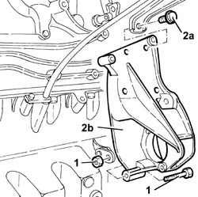

2710A34 intermediate drive shaft bearing support - r + r with intermediate drive shaft removed for versions with air conditioner
- Path
- Procedures > 27 AXLE > 2710 FRONT AXLE > 2710A drive shafts and joints > 2710A34 intermediate drive shaft bearing support - r + r with intermediate drive shaft removed for versions with air conditioner
- Kind
- repair procedure (removal / refitting; the operation number is the code)
- Applies to
- engines: 1.9 JTD 8v , 2.4 JTD 10v; all production periods
- Interactive page
- https://sloeber94.github.io/elrnDB-a156/en/#/3238024
Applies to: engines: 1.9 JTD 8v ; all production periods
Applies to: engines: 2.4 JTD 10v; all production periods
 Removing
Removing
 Refitting
Refitting5530A14 alternator - r+r for versions with air conditioner
4450B10 Front WHEEL (one) - R.R.
7055B64 Engine compartment DUST shield in front wheel arch (one), left or right - R.R.
1092G10 single engine belt r r
1. Unscrew bolt of intermediate drive shaft bearing support to crankcase sump.
2. Unscrew screws (2a) and remove intermediate drive shaft (2b) bearing support.

Applies to: engines: 2.4 JTD 10v; all production periods
Refitting
RemovingMount intermediate drive shaft bearing support and fix it with its screws.
Tighten bolt of intermediate drive shaft bearing support to oil sump.
1092G10 single engine belt r r
7055B64 Engine compartment DUST shield in front wheel arch (one), left or right - R.R.
Topics linked from this page (5)
- 1092G10 single engine belt r r
- 2710A35 intermediate drive shaft mount - r r
- 4450B10 Front WHEEL (one) - R.R.
- 5530A14 alternator - r+r for versions with air conditioner
- 7055B64 Engine compartment DUST shield in front wheel arch (one), left or right - R.R.